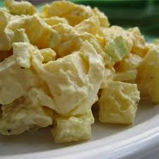

home
Potato Salad

A simple dish to add carbs to your diet.
Cook Time
Ingredients
- Potatoes 4
- Mayo
- Salt 1 pinch
- Water enough to cover
Instructions
- Add Water and Salt to medium pot with lid
- Set it to high and wait for it to boil.
- Peel and cube the potatoes
- Add the cubed potatoes
- Cook until soft
- Drain out the water
- Let it cool down
- Add Mayo to taste
- Serve